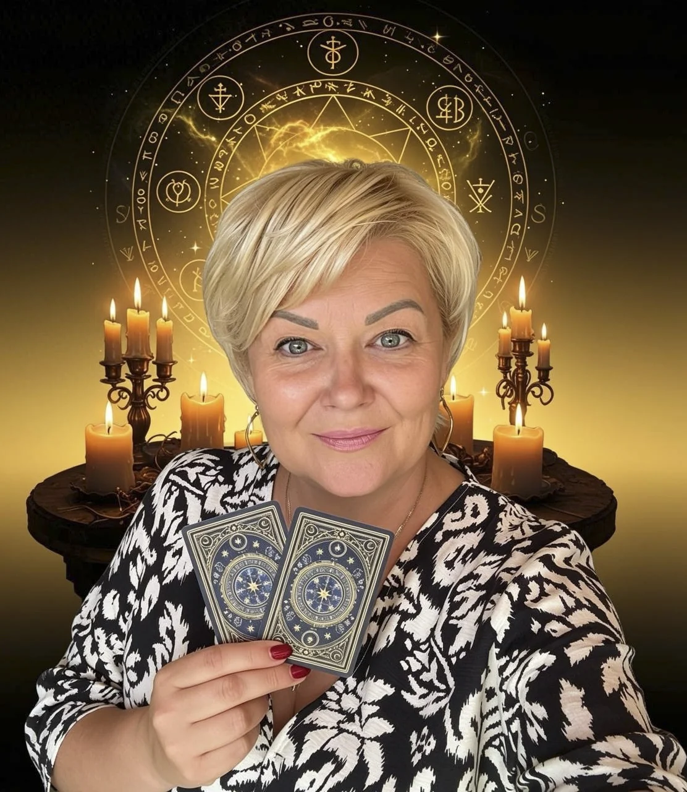

Меня зовут Светлана. Я таролог, эзотерик, практикующий мастер и преподаватель с опытом более 20 лет, создатель Школы Таро и Магии «ЛУЧ СВЕТА».
За эти годы я видела, кажется, всё. Людей, которые впервые брали колоду и боялись даже перемешать карты. Людей, которые покупали пятнадцатую колоду, потому что предыдущие четырнадцать «почему-то молчали». Людей, которые перед раскладом зажигали семь свечей, открывали окно, закрывали дверь, снимали украшения, ждали нужной Луны — и к моменту, когда наконец можно было вытянуть карту, уже забывали, что вообще хотели спросить.
Поэтому этот материал я хочу посвятить самому началу. Без лишнего тумана. Хотя немножко тумана мы всё-таки оставим. Мы же ведьмы, в конце концов.

Глава 1. Хочу изучать Таро, но боюсь
Первое знакомство с Таро у многих начинается вовсе не с Шута, Мага или Верховной Жрицы. Оно начинается с мысли: «А вдруг я туда полезу — и потом пожалею?»
Страшно купить первую колоду. Какую выбрать? Почему одна стоит 20 евро, другая 70? Почему на одной красивые женщины, на другой скелеты, на третьей котики, а в четвёртой столько символов, что кажется, будто к ней нужен отдельный словарь и отпуск на изучение?
Страшно сделать первый расклад. А вдруг выпадет что-нибудь плохое? А вдруг карты скажут, что он меня не любит? А вдруг я увижу событие, которое не смогу изменить?
А ещё страшнее — ничего не понять. Выложила три карты. Посмотрела. Карты посмотрели на тебя. И вот вы сидите друг напротив друга и обе стороны явно ждут, кто начнёт разговор первым.
Это нормально. Страх появляется там, где пока нет знаний и опыта.
Самая большая ошибка новичка — решить, что хороший таролог однажды просто берёт карты в руки и внезапно начинает видеть Вселенную в формате Full HD. Нет.
Сначала мы учимся. Потом практикуем. Ошибаемся. Проверяем. Снова раскладываем. И постепенно изображения перестают быть отдельными картинками и начинают складываться в историю.
Поэтому первая задача — не стать великим тарологом за неделю. Первая задача гораздо проще: перестать бояться колоды и начать с ней работать.
Глава 2. Таро — это грех? И уже пора бронировать котёл?
Один из самых частых вопросов новичков: «А Таро — это вообще безопасно?» Особенно если человек вырос в среде, где гадание автоматически отправлялось в один список с грехом, демонами и билетом в ад без обратной дороги.
Сами карты не обладают моралью. Это инструмент. Ножом можно приготовить ужин, а можно причинить вред. Интернет можно использовать для обучения, а можно провести четыре часа, выясняя, кто с кем развёлся. Важны человек, его намерение и способ применения инструмента.
Я отношусь к своим картам с уважением. Но уважение не означает страх. Для меня Таро — это способ диагностики, анализа, прогнозирования и работы с символами. А уже то, как человек применяет полученную информацию, зависит от него самого.
Можно использовать карты, чтобы помочь человеку увидеть варианты решения. А можно запугивать: «На вас страшное проклятие! Срочно 900 евро, три свечи и фотографию свекрови». Вот здесь проблема уже совершенно не в Таро.
Поэтому чемодан в ад пока можно не собирать. Сначала изучим Старшие Арканы.
Глава 3. Почему Таро вообще работает?
Здесь важно разделить то, что мы знаем, и то, что относится к различным эзотерическим и психологическим объяснениям. Наука не установила, что карты способны объективно получать информацию о будущем или читать мысли другого человека.
Но существует психологический подход к работе с символами. Карл Густав Юнг развивал идеи архетипов и коллективного бессознательного. Архетипические сюжеты действительно повторяются в мифах, религиях, сказках и человеческой культуре.
- Мать.
- Отец.
- Власть.
- Любовь.
- Выбор.
- Потеря.
- Разрушение старого.
- Начало нового.
- Страх.
- Победа.
- Одиночество.
- Трансформация.
И именно поэтому изображения Таро так легко становятся языком ассоциаций. Посмотрите на Башню. Даже человек, который никогда не изучал Таро, скорее всего, почувствует: здесь что-то рушится. Посмотрите на Солнце — и возникает совсем другое ощущение. Символ запускает цепочку ассоциаций.
А дальше начинается работа таролога: значение карты, символика, положение в раскладе, соседние карты, вопрос, контекст и опыт мастера.
В эзотерической традиции существуют и другие объяснения — информационное поле, синхроничность, интуитивное считывание, взаимодействие с тонким планом. Это уже мировоззренческие модели, а не доказанные научные механизмы.
Лично для меня Таро гораздо интереснее именно тогда, когда мы не пытаемся превратить его ни в цирковой фокус, ни в сухую таблицу значений. Карта — это язык. А таролог учится на нём читать.
Глава 4. Зачем вообще изучать Таро?
Таро — это гораздо больше, чем вечный вопрос: «А он мне напишет?» Хотя, конечно, человечество переживёт ещё не одну цивилизацию, а этот вопрос останется.
С помощью расклада можно исследовать:
- Выбор. Что даст вариант А? Что даст вариант Б? Какие риски я не замечаю?
- Отношения. Что происходит между людьми? Какие ожидания, противоречия и перспективы существуют?
- Работу и деньги. Что мешает развитию? Где слабое место проекта? Какие последствия может иметь смена работы?
- Причины повторяющейся ситуации. Почему сценарий снова возвращается и какую роль в нём играет сам человек?
- Возможное развитие событий. Не «каменная плита судьбы», а наиболее вероятный сценарий при существующих обстоятельствах.
- Самопознание. Наши страхи, желания, внутренние конфликты, сильные стороны.
- Стратегию действий. Не просто «что будет?», а «что я могу сделать?»
И вот последнее я считаю особенно важным. Плохой расклад заканчивается словами: «Ну вот такая судьба». Хороший начинается после прогноза: «А теперь посмотрим, что с этим можно сделать».
Глава 5. Нужно ли посвящение в Таро?
Можно встретить мнение, что без специального посвящения карты не будут работать. Якобы должен прийти Учитель, открыть некую дверь, подключить вас к эгрегору — и только после этого Верховная Жрица наконец согласится разговаривать.
Нет универсального правила, по которому человек обязан пройти подобную инициацию, чтобы изучать Таро. Посвящения существуют в отдельных эзотерических школах и традициях. Внутри конкретной системы они могут иметь символический или духовный смысл. Но это не означает, что без обряда невозможно научиться читать карты.
Настоящее посвящение новичка обычно выглядит гораздо менее кинематографично:
- первая колода;
- первая книга;
- первый расклад;
- первые ошибки;
- первые совпадения;
- первая обратная связь;
- сотни раскладов;
и внезапно однажды ты понимаешь: я уже читаю карты. Вот это посвящение практикой отменить невозможно.
Глава 6. Как выбрать первую колоду?
Вот здесь начинается прекрасное. Вы заходите в магазин за одной колодой. Через сорок минут у вас в корзине семь. Добро пожаловать.
Условно колоды можно разделить на несколько больших направлений.
Исторические системы
Например, Марсельское Таро и старинные итальянские колоды. В числовых Младших Арканах там часто нет привычных сюжетных сцен, поэтому новичку работать с ними бывает сложнее.
Система Райдера—Уэйта—Смит
Одна из наиболее распространённых систем обучения. Её большое преимущество для новичка — сюжетно прорисованные Младшие Арканы. Поэтому человек может не только вспоминать книжное значение, но и анализировать саму сцену.
Таро Тота Алистера Кроули
А вот здесь начинается моя любимая территория. Таро Тота — сложная, насыщенная система, в которой соединены астрология, каббалистическая символика, алхимические и оккультные соответствия.
Я не считаю, что Тота обязательно нужно бояться новичку. Но эту колоду действительно желательно изучать как систему, а не пытаться читать только по принципу «мне кажется, здесь женщина грустная». Таро Тота раскрывается слоями. И именно поэтому спустя годы работы в нём всё равно продолжаешь находить новое.
Современные авторские колоды
Их огромное количество. Ведьмы, кошки, вампиры, феи, города, растения, мифология — сегодня можно найти колоду практически под любое мировоззрение.
Как выбирать?
- Первое: поймите, по какой системе собираетесь учиться.
- Второе: посмотрите всю галерею колоды, а не только красивую коробочку.
- Третье: изображения должны вызывать у вас ассоциации.
- И четвёртое: вам должно хотеться брать эту колоду в руки.
Иногда всё действительно начинается с совершенно ненаучного: «Ой. Хочу вот эту». И знаете что? Иногда этого вполне достаточно.


Глава 7. Нужно ли «заряжать» новую колоду?
Вот вы купили карты. И тут интернет сообщает, что теперь необходимо:
- положить их под Луну;
- положить на них кристалл;
- окурить;
- подержать возле свечи;
- спать с ними три ночи;
- не давать никому трогать;
- познакомиться с каждой картой;
- и, видимо, зарегистрировать по месту жительства.
Спокойно. Нет универсального обязательного обряда «активации» колоды. Но ритуал знакомства может быть полезен вам.
Я советую гораздо более практичный вариант. Возьмите карты одну за другой. Рассмотрите каждую.
- Что вы увидели первым?
- Какая эмоция возникает?
- Какие символы бросаются в глаза?
- Что происходит на карте?
- Если бы это была сцена фильма — что случилось пять минут назад и что произойдёт через пять минут?
Записывайте наблюдения. Особенно полезно сравнивать собственные первые ощущения с системой значений, которую вы изучаете. Вот это настоящее знакомство с колодой.
Не колоду нужно включить. Включиться нужно вам.
Глава 8. Маленький словарь начинающего таролога
Чтобы вы не сидели в чате тарологов с выражением лица: «Люди, вы сейчас вообще на каком языке разговариваете?»
- Аркан — отдельная карта Таро.
- Старшие Арканы — 22 карты основной символической последовательности.
- Младшие Арканы — остальные 56 карт четырёх мастей.
- Рубашка — обратная сторона карты.
- МБК — маленькая белая книжечка, инструкция, которая обычно прилагается к колоде.
- Расклад — определённая схема расположения карт, где каждой позиции задаётся смысл или вопрос.
- Триплет — расклад из трёх карт.
- Сигнификатор — карта, обозначающая человека, ситуацию или тему расклада.
- Кверент — человек, для которого проводится консультация или задаётся вопрос.
- Прямое положение — обычное положение карты.
- Перевёрнутое положение — карта расположена вверх ногами относительно читающего; используется не всеми школами.
- Тасование — перемешивание колоды.
Вот и всё. Экзамена не будет. Пока.
Глава 9. Как правильно задавать вопросы Таро?
Вот здесь находится половина хорошего расклада. Плохой вопрос: «Что меня ждёт?» Где? Когда? В любви? В работе? Сегодня вечером возле холодильника? Вселенная большая. Давайте всё-таки уточним.
Хороший вопрос должен быть конкретным, понятным и ограниченным контекстом.
Вместо: «Выйду ли я замуж?» лучше: «Какие перспективы серьёзных отношений у меня в ближайшие 12 месяцев?»
Ещё полезнее: «Что сейчас мешает мне построить серьёзные отношения и что я могу изменить со своей стороны?»
Мне особенно нравится принцип:
«Чтобы что?»
«Стоит ли менять работу?» Чтобы что?
- Больше зарабатывать?
- Снизить стресс?
- Получить карьерный рост?
- Переехать?
Когда появляется цель, появляется и нормальный вопрос. Хорошие конструкции:
- Что мне необходимо сделать, чтобы…?
- Какие факторы мешают мне…?
- Как будет развиваться ситуация в течение…?
- Что изменится, если я выберу вариант А?
- Что изменится, если выберу вариант Б?
- Каковы сильные и слабые стороны этого решения?
- На что мне обратить внимание в ближайшие…?
И ещё одно правило: задавайте срок. Не «что будет у нас с Васей вообще». А: «Какова тенденция развития наших отношений в ближайшие три месяца?»
Карты любят конкретику. Как, собственно, и жизнь.
Глава 10. Можно ли раскладывать самой себе?
Можно. И я считаю это необходимой частью обучения. Но здесь существует одна толстая, жирная и очень хитрая проблема: мы хотим увидеть то, что хотим увидеть. Особенно в любви.
Карты говорят: «Человек отдаляется». Внутренний таролог: «Нет-нет. Это он просто испугался силы своих чувств».
Карты: «Нет». Вы: «Наверное, ещё карту». Вот здесь и начинается не Таро, а переговоры с колодой.
Как сохранить объективность?
- Первое — записывайте расклад. Вопрос, дату, карты, первоначальную трактовку. А потом возвращайтесь к нему.
- Второе — не переделывайте один вопрос десять раз. Если ответ не понравился, это ещё не повод перемешивать колоду до тех пор, пока наконец не выпадут Влюблённые.
- Третье — попробуйте три трактовки. Самую оптимистичную. Самую негативную. И наиболее реалистичную между ними.
- Четвёртое — представьте, что расклад не ваш. Перед вами сидит клиент по имени Света, Маша или Наташа. Что бы вы сказали ей? Это великолепно отрезвляет.
И главное: если вы замечаете, что без карты уже невозможно решить, что заказать на ужин, — сделайте перерыв. Таро должно расширять вашу свободу выбора, а не отнимать её.

Глава 11. Когда начинать раскладывать другим?
Рано. Да, именно так. Не нужно ждать момента, когда вы выучите абсолютно всё. Он не наступит.
Но начинать лучше с вопросов, где можно получить обратную связь. Например:
- «Что сейчас происходит в этой ситуации?»
- «Как человек относится к работе?»
- «В чём причина конфликта?»
Почему? Потому что если новичок делает прогноз: «Что произойдёт через пять лет?» — то проверить себя он сможет примерно тогда, когда уже забудет, где лежит этот расклад. А настоящее можно проверить сразу.
Начинайте с близких, знакомых или добровольцев. Но обязательно просите честную обратную связь. Не: «Всё сбылось, ты волшебница!» А конкретно:
- Что совпало?
- Что нет?
- Что было понято неправильно?
Когда брать деньги?
Когда вы способны провести человеку полноценную консультацию, а не просто назвать значения выпавших карт. Хорошая консультация включает:
- Запрос. Что человек действительно хочет понять?
- Формулировку вопросов.
- Выбор или создание расклада.
- Интерпретацию всей системы карт.
- Практические выводы.
- Завершение консультации. Человек должен понимать, что он узнал и что может делать дальше.
Профессиональный таролог не просто сообщает: «У вас Башня». И исчезает в тумане. Он объясняет, что именно Башня означает в контексте этого вопроса.
Глава 12. Главные мифы о Таро
«Таро программирует судьбу»
Сам факт вытягивания карты не является доказанным механизмом изменения будущего. Но слова действительно способны психологически влиять на человека.
Поэтому фраза таролога: «Ты никогда не выйдешь замуж» — может причинить вполне реальный вред. Не магический. Психологический. Именно поэтому мастер обязан следить за формулировками.
«Для любви нужна одна колода, для денег другая»
Нет обязательного правила. Можно прекрасно работать одной хорошо изученной колодой. А можно иметь двадцать. Главное — понимать систему.
«Чем дороже колода, тем она сильнее»
Нет. Цена картона ещё никому автоматически ясновидение не добавила.
«Никому нельзя давать карты в руки»
Это правило конкретного практика, а не закон Таро.
«Гадать можно только на специальной скатерти»
Можно и на столе. Только крошки после завтрака лучше убрать. Не из-за энергетики. Король Дисков просто не обязан лежать в варенье.
«Обязательно нужна свеча»
Нет. Хотите — зажигайте. Свеча может помогать настроиться и создавать ритуальную атмосферу. Не хотите — не зажигайте.
«Перевёрнутые карты обязательны»
Нет. Это зависит от школы и вашей системы чтения.
«Есть абсолютно хорошие и абсолютно плохие карты»
Практически любой Аркан раскрывается в контексте. Башня может означать болезненное разрушение, но иногда рушится именно то, что давно мешало человеку. Солнце кажется прекрасным, но даже чрезмерная самоуверенность может стать проблемой. Поэтому мы читаем не отдельную карту, а карту в вопросе и раскладе.
Глава 13. Этика таролога
А вот это уже не магия. Это профессионализм.
1. Не запугивать
Никаких: «Вы умрёте». «Ваш ребёнок заболеет». «На вас смертельная порча». Особенно если после этого неожиданно появляется предложение снять её за отдельную сумму.
2. Не отнимать у человека право выбора
Таролог может показать тенденции и варианты. Но решение принимает человек.
3. Не выдавать Таро за врача, адвоката или финансового консультанта
Расклад не заменяет медицинскую диагностику, юридическую помощь или профессиональную финансовую консультацию.
4. Соблюдать конфиденциальность
История клиента — не материал для сплетен.
5. Не превращаться в Бога
Вы можете быть прекрасным мастером. Но вы всё равно человек. И это нормально.
6. Уметь сказать: «Я не знаю»
Иногда карта не читается. Иногда вопрос сформулирован плохо. Иногда информации недостаточно. Гораздо профессиональнее признать это, чем сочинить красивую сказку.
7. Не создавать зависимость
Цель консультации — помочь человеку лучше ориентироваться в ситуации. А не сделать так, чтобы через два часа он снова писал: «А теперь спроси, почему он поставил мне лайк».
Глава 14. Можно ли научиться Таро самостоятельно?
Да. Технически — совершенно возможно. Есть книги, лекции, колоды, исследования, огромный объём материалов. Но есть одна проблема. Информации слишком много.
Открываете одну книгу: Тройка — одно. Вторую: совсем другое. Интернет: третье. Форум 2008 года: «А моя бабушка говорила…» И вот вы уже не изучаете Таро, а проводите археологические раскопки в собственном мозге.
Наставник нужен не потому, что без Учителя карты «не откроются». Он нужен, чтобы дать систему.
- Что изучать сначала.
- Что потом.
- Почему карта читается именно так.
- Как соединять карты.
- Как читать позиции.
- Как строить расклады.
- Как проверять прогнозы.
- Как отличать собственные фантазии от интерпретации.
И самое главное — как перейти от: «Тройка Мечей означает боль» к настоящему чтению: почему эта боль возникла, к чему ведёт, как связана с другими картами и что человеку с ней делать. Вот здесь и начинается профессиональное Таро.
Вместо заключения
Если Таро вас давно притягивает, не нужно ждать мистического знака. Хотя если завтра возле вашего дома приземлится ворон с колодой Тота в клюве — напишите мне. Тут я соглашусь: знак достаточно убедительный.
Но обычно всё начинается гораздо проще. С первой колоды. С первой карты. С первого вопроса. С первого: «Я ничего не понимаю!»
А потом проходит время — и однажды вы смотрите на расклад и уже видите не семь отдельных карт. Вы видите историю. Причину. Связи. Развитие. Выход.
И именно этому я учу в своей Школе Таро и Магии «ЛУЧ СВЕТА». Не заучивать 78 карточек как таблицу умножения. А понимать систему, видеть расклад целиком, диагностировать ситуацию и знать, что с полученной информацией делать дальше.
Потому что настоящее мастерство начинается не тогда, когда вы научились спрашивать у карт: «Что меня ждёт?» А тогда, когда научились спрашивать: «Что происходит, почему это происходит — и что я могу изменить?»
Вот тогда Таро перестаёт быть просто гаданием. И становится инструментом Мастера.
Следующий шаг
От первой колоды — к осмысленной практике
Если хочется изучать Таро последовательно, приглашаю на мой авторский курс «От новичка до профессионала». Четыре месяца, Таро Райдера Уэйта и «78 дверей», видеоуроки, PDF и практика в выбранном формате.
Самостоятельно — видео, PDF и бонусы, без проверки работ и онлайн-встреч. В группе — с еженедельной онлайн-практикой. Индивидуально — лично со мной.
Самостоятельное и индивидуальное обучение можно начать в любое время. Дата группового потока и условия — на странице курса.
Посмотреть программу и стоимость